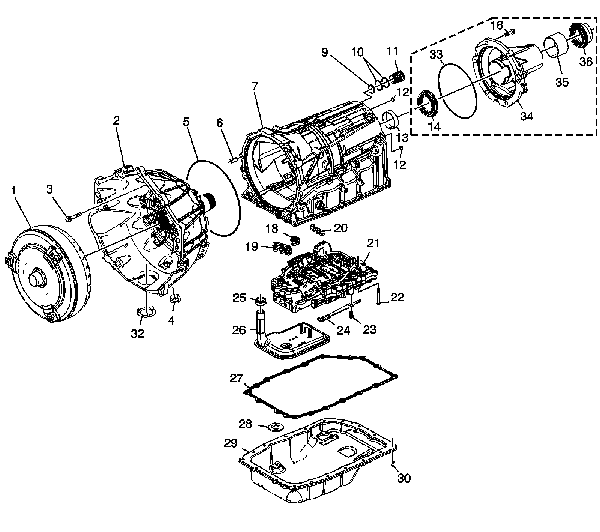

Case and Associated Parts
Disassembled Views (6L80)
Case and Associated Parts:

1 - Torque Converter Assembly
2 - Torque Converter (with Fluid Pump) Housing Assembly - Model Dependent
3 - Bolt, M10 x 50 mm
4 - Torque Converter Housing Access Hole Cover - Model Dependent
5 - A/Trans Fluid Pump Seal
6 - Torque Converter Housing Locator Pin
7 - A/Trans Case Assembly
9 - A/Trans Connector Seal
10 - A/Trans Connector (O-ring) Seal
11 - A/Trans Electrical Connector Passage Sleeve
12 - A/Trans Case Plug
13 - Output Shaft Bushing
14 - Output Shaft Seal Assembly - 4WD Models
16 - Bolt, M10 x 40 mm - Model Dependent
18 - A/Trans Fluid Pump Seal Assembly
19 - A/Trans Fluid Pump Seal Assembly
20 - Center Support Fluid Passage Seal Assembly
21 - Control (with Body and Valve) Valve Assembly
22 - Bolt, M5 x 73 mm
23 - Bolt, M6 x 14.5 mm
24 - Manual Shaft Detent Assembly
25 - A/Trans Fluid Filter Seal Assembly
26 - A/Trans Fluid Filter Assembly
27 - A/Trans Fluid Pan Gasket
28 - A/Trans Fluid Pan Magnet
29 - A/Trans Fluid Pan Assembly
30 - Bolt, M6 x 20 mm
32 - Torque Converter Housing Access Hole Cover
33 - A/Trans Case Extension Seal - 2WD Models
34 - A/Trans Case Extension - 2WD Models
35 - Prop Shaft Front Slip Yoke Bushing - 2WD Models
36 - Prop Shaft Front Slip Yoke Oil Seal - 2WD Models